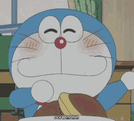
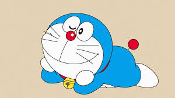
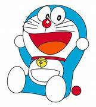
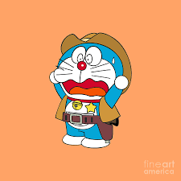

DORAEMON
Doraemon is a robotic cat who travels back in time to help Nobita.
At first, he was predominantly kingfish color, with a blue tail, a white stomach, and flesh-colored hands and feet. He also stooped, and had a body much larger than his head. In later issues, he sported a smaller body, white hands and feet, and a red tail — the appearance most identify him with today.
DORAEMON FAVOURITE FOOD
Doraemon's favourite food is dorayaki (known as "fudgy pudgy pie" in the first revision of the English manga, although it has since been reverted back to "dorayaki", "yummy buns" in the English dub, and "dora-cakes/bean jam buns" in other versions), a Japanese treat filled with red bean paste.
Instead od Doraemon is machine or a robot but it has fear of mouse.After seeing mouse Doraemon always shouted or faint down.




 